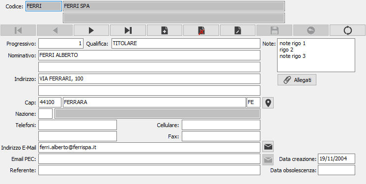

Il pulsante consente di ricercare le coordinate geografiche
dell'indirizzo completo del contatto; è necessaria una connessione internet
e viene aperto il browser web utilizzando Google Maps.
Il pulsante consente di ricercare le coordinate geografiche
dell'indirizzo completo del contatto; è necessaria una connessione internet
e viene aperto il browser web utilizzando Google Maps.Contatti

CODICE CLIENTE / FORNITORE: campo alfanumerico di 8 caratteri presente in anagrafica per indicare il cliente / fornitore cui si riferisce il contatto in esame. Sul campo sono attive le funzioni di ricerca e di manutenzione della tabella.
PROGRESSIVO: numero progressivo di contatto riferito al cliente / fornitore di cui al campo precedente. È gestito automaticamente dal programma. Sul campo sono attive le funzioni di ricerca sulla tabella stessa.
NOMINATIVO: due campi alfanumerici per inserire il nominativo del contatto.
INDIRIZZO: due campi alfanumerici per inserire l'indirizzo del contatto.
C.A.P.: campo alfanumerico per inserire il codice di avviamento postale del contatto. Sul campo è attiva la ricerca (F9) sulla tabella dei codici di avviamento postale. In questo caso è possibile acquisire attraverso il Cap anche la città e la provincia del contatto.
CITTA': campo alfanumerico per inserire la città del contatto.
PROVINCIA: campo alfanumerico di due caratteri per indicare la sigla della provincia del contatto. Sul campo è attiva la ricerca (F9) sulla tabella province.
Il pulsante consente di ricercare le coordinate geografiche
dell'indirizzo completo del contatto; è necessaria una connessione internet
e viene aperto il browser web utilizzando Google Maps.
CODICE NAZIONE: codice della nazione di appartenenza del contatto. Sul campo è attiva la ricerca (F9) sulla tabella nazioni.
TELEFONI: campi alfanumerico di 25 caratteri per descrivere un numero telefonico.
FAX: campo alfanumerico di 25 caratteri per descrivere un numero di fax.
CELLULARE: campo alfanumerico di 25 caratteri per descrivere un numero telefonico.
TELEX: campo alfanumerico di 25 caratteri per descrivere un numero di telex.
INDIRIZZO E-MAIL: campo alfanumerico di 80 caratteri per descrivere un indirizzo e-mail. L’informazione può essere utilizzata da alcuni programmi per l’inoltro di documenti tramite posta elettronica.
EMAIL PEC: campo alfanumerico di 80 caratteri per descrivere un indirizzo e-mail PEC.

 Il
pulsante consente di inviare una email all'indirizzo email o email
PEC; si apre una finestra dove viene precompilato l'indirizzo del destinatario
ed è possibile indicare un destinatario per conoscenza, l'oggetto, il
testo del messaggio ed eventualmente la richiesta di conferma di lettura;
è presente anche un pulsante Allegati che consente di aggiungere allegati
di qualsiasi tipo.
Il
pulsante consente di inviare una email all'indirizzo email o email
PEC; si apre una finestra dove viene precompilato l'indirizzo del destinatario
ed è possibile indicare un destinatario per conoscenza, l'oggetto, il
testo del messaggio ed eventualmente la richiesta di conferma di lettura;
è presente anche un pulsante Allegati che consente di aggiungere allegati
di qualsiasi tipo.
REFERENTE: campo alfanumerico di 50 caratteri per descrivere il nome di un referente aziendale.
DATA CREAZIONE: indica la data in cui il contatto è stato caricato. Al momento del caricamento di un nuovo record in questo campo viene proposta la data di sistema.
DATA OBSOLESCENZA: indica la data in cui il contatto è stato dichiarato obsoleto.
NOTE: campo memo per annotazioni generali.
In presenza del modulo FileStore sarà reso visibile il pulsante per poter gestire gli allegati del contatto.